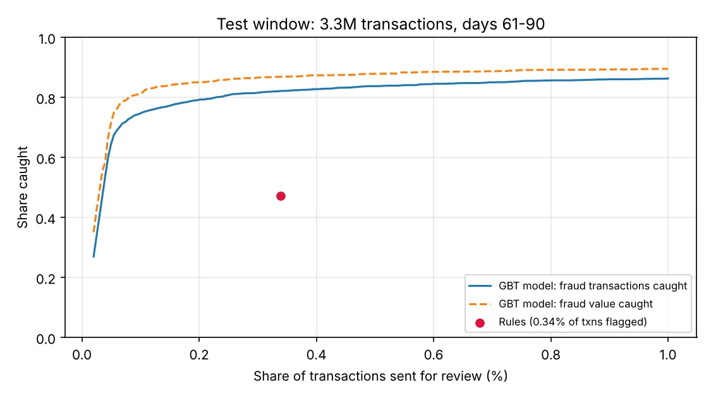

Card Fraud Analytics
An end-to-end fraud pipeline on 10 million card transactions in PySpark
Hive tables partitioned by day, behavioural features as Spark SQL window functions, a Spark MLlib gradient-boosted model compared head-to-head with fraud rules at the same alert budget, and HiveQL queries that turn scores into review workload and losses prevented.
Recall vs review budget, and the analyst’s ranked daily queue
results/recall_vs_review_rate.png · alert_queue.py
[01] ~/the-problem
Why it matters
Fraud teams can only review a tiny slice of transactions. The question isn’t “is the model accurate?” but “at the review budget we can staff, how much more fraud do we stop than our rules?”
Rules miss stealth fraud completely, because it only shows up as a shift in the card’s own behaviour.
Both approaches flag the same 0.34% of transactions. The model catches 82.2% of fraud; the rules catch 47.2%.
[02] ~/how-it-works
How it works
Everything runs in Spark, uses only past activity per card, and is judged at a fixed alert budget.
- 01
Simulate 10M transactions
Parquet partitioned by txn_date, with look-alike noise (travel abroad, big purchases) and three fraud styles: burst, card testing and stealth.
- 02
Features in Spark SQL
RANGE BETWEEN … PRECEDING windows: 1h / 24h velocity, small charges in the last hour, 30-day baseline z-scores, online and foreign surprise.
- 03
Time-based model
Train on days 1–60, test on 61–90. Smoothed merchant-category risk; MLlib GBTClassifier with legit rows down-sampled to 5%.
- 04
Same-budget comparison
Model vs a typical rule set at the same alert volume, then at 0.1%, 0.2% and 0.5% budgets: transaction, value and card-level metrics.
- 05
Analyst queue
alert_queue.py ranks one day’s alerts with reasons an analyst would say: “amount 3.6× the card’s 30-day average; foreign on a card rarely used abroad”.
- 06
HiveQL business view
Hive database fraud (91 partitions) answers losses prevented, daily workload and where rules fail.
[03] ~/results
Results
Test window: days 61–90, 3.3M transactions, 0.08% fraud. ROC-AUC 0.976, PR-AUC 0.746.
| METRIC @ 0.34% ALERT RATE | RULES | GBT MODEL |
|---|---|---|
| Fraud transactions caught | 47.2% | 82.2% |
| Fraud value caught | 53.8% | 86.9% |
| Precision | 10.2% | 17.7% |
| Compromised cards caught | 73.1% | 93.5% |
| Median fraud txns before first alert | 2 | 1 |
By fraud style at the rules’ alert volume: burst 91%, card-testing 96%, stealth 38%. The rules catch 0% of stealth fraud.
HONEST LIMITS
— Synthetic data: I wrote both the fraud patterns and the features, so the model has an easier job than on real data.
— Hour of day ranks high because of how legitimate spend was simulated; Spark runs in local mode; labels arrive instantly (real chargebacks take weeks).
WHAT I’D DO NEXT
→ Rerun the pipeline on the public IEEE-CIS fraud dataset to show real-data results
→ A cost model per alert and per missed fraud (as in credit-default-scorecard)
→ Delayed-label training to mimic chargebacks
→ Run on a real cluster and tune partitions